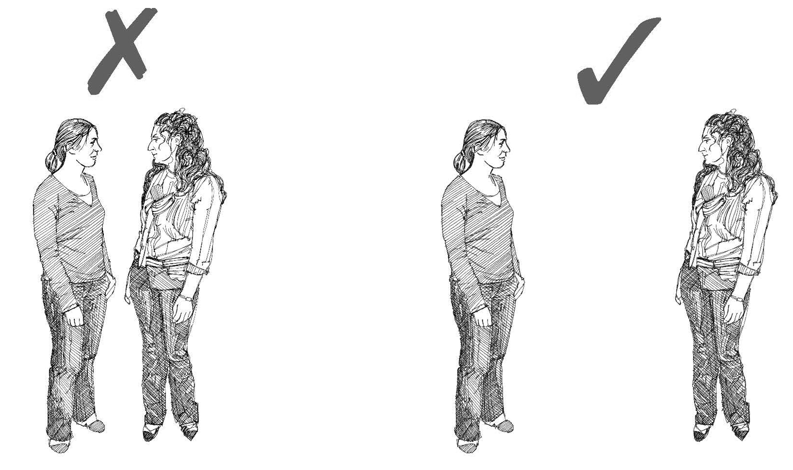

Resumen
- El distanciamiento social entre las personas es una forma efectiva de prevenir la propagación de enfermedades contagiosas.
- Por ejemplo, es probable que se pueda hacer poco para tratar a los pacientes en la primera fase de una pandemia de influenza, porque no habrá suficientes medicamentos y no habrá una vacuna disponible. Lo más importante será evitar que la influenza se propague.
- Otras enfermedades para las cuales es importante mantener un distanciamiento social entre las personas incluyen el Ébola , la fiebre de Marburgo , la fiebre de Lassa , el sarampión y otras infecciones respiratorias, la peste , el MERS y la viruela del simio .

Toser sin cubrirse la boca con la mano ayuda a propagar los gérmenes
Lo que necesita saber
- El distanciamiento social entre personas es la práctica de mantener a las personas a una distancia segura entre sí durante los brotes de enfermedades altamente contagiosas.
- El distanciamiento social entre personas es una de las mejores maneras de prevenir la propagación de enfermedades muy contagiosas.
- Para prevenir la transmisión cuando los gérmenes se propagan por gotitas al toser o estornudar, la persona enferma puede seguir la etiqueta de tos (ver herramienta de acción 26 ) y las personas sanas pueden mantenerse a una distancia segura de las personas enfermas y entre sí.
- Una persona que este más cerca de un metro de una persona enferma (por ejemplo, con influenza) puede enfermarse al inhalar las gotitas que expulsan cuando estornudan o tosen.
- El distanciamiento social también consiste en minimizar el contacto físico con otras personas. Cuando las personas se tocan menos, es menos probable que se transmitan gérmenes entre sí. Evite dar la mano, abrazarse o besarse en la mejilla.

Demasiado cerca. Distancia segura.
Consejos para protegerse de las enfermedades que se contagian al toser o al estornudar
- En una epidemia o pandemia de una enfermedad que puede transmitirse por el aire, siempre protéjase utilizando el equipo adecuado. Use una máscara y guantes (vea las herramientas de acción 5 y 6 ).
- Manténgase al menos a una distancia de un metro de las personas que pueden estar enfermas con el Ébola, la fiebre de Marburgo, la fiebre de Lassa, la peste, el MERS, la viruela del simio, el sarampión y otras enfermedades respiratorias.
- No le dé la mano ni toque a las personas que pueden estar enfermas de influenza. Es posible que hayan tosido o estornudado en sus manos y luego puedan transmitirle los gérmenes.
- En un brote de una enfermedad altamente contagiosa (por ejemplo, el Ébola), una forma de prevenir la propagación de la enfermedad es desalentar el apretón de manos o saludar a las personas con abrazos o besos. Es importante explicárselo a la comunidad, para que todos entiendan y acepten que los saludos y el comportamiento social deben cambiar durante una epidemia.
- Utilice la comunicación de la movilización social para el cambio de comportamiento para informar a la comunidad sobre la importancia de mantener una distancia prudente entre las personas. Ayúdelos a actuar de una manera que evite que se enfermen (consulte las herramientas de acción 3 , 29 y 43 ).